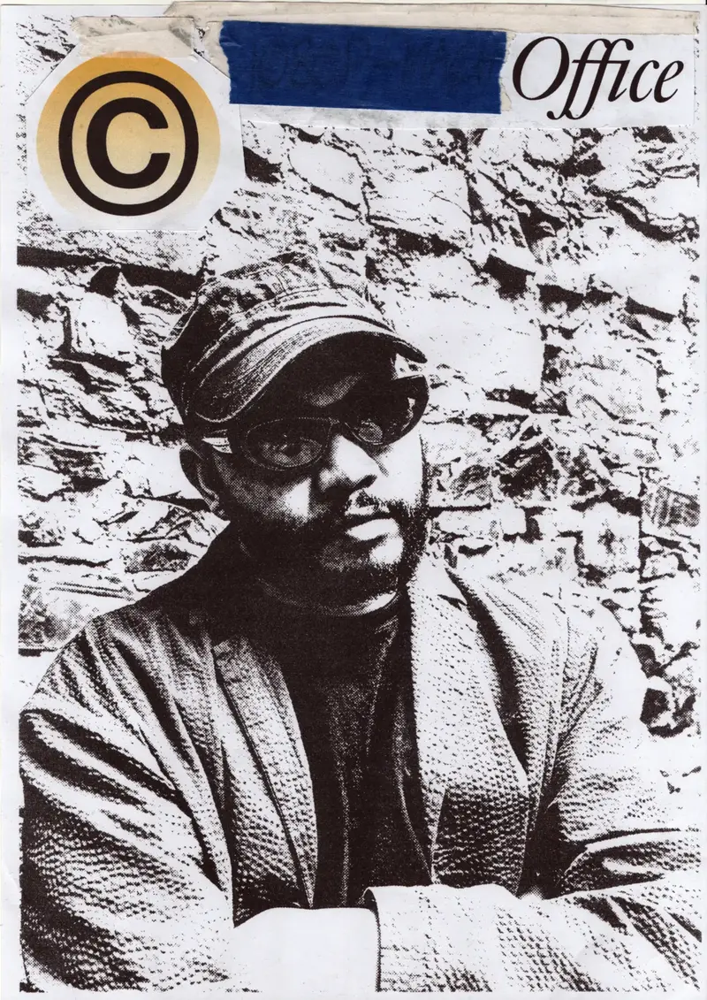

01Position
My practice produces visual systems, publications, images, objects and spatial interventions that examine how contemporary culture is made, circulated and remembered.

My practice produces visual systems, publications, images, objects and spatial interventions that examine how contemporary culture is made, circulated and remembered.
I work through graphic design, publishing, creative direction and research, treating these not simply as forms of communication but as methods for organising cultural material. I collect, edit, sequence, reproduce and recontextualise images, language and artefacts drawn from popular culture, archives and the everyday. Through these processes, I am interested in the relationships between design and culture: how identities are constructed, how images acquire meaning through circulation, and how seemingly ordinary material can become evidence of a particular place and time.
This approach comes from an interest in the instability of the archive, particularly within a South African context. Culture is constantly being produced, yet much of its visual and material history remains dispersed across personal collections, commercial media, streets, institutions and digital platforms. My work responds to this condition by using design as both a productive and archival practice: making new cultural material while simultaneously developing structures through which existing material can be gathered, interpreted and preserved.
What matters to me is not preservation for its own sake, but what becomes possible when cultural material is brought into relation. A publication, exhibition, identity, image or object can become a site through which different histories, disciplines and communities encounter one another. In this sense, I understand design as a form of cultural infrastructure: a means of giving form to the present while constructing the conditions through which it might later be read.
Founder of Artefacts Office, a Cape Town-based design practice working with cultural institutions, artists, brands, publishers and independent platforms across identity, publishing, exhibition, film and spatial communication.